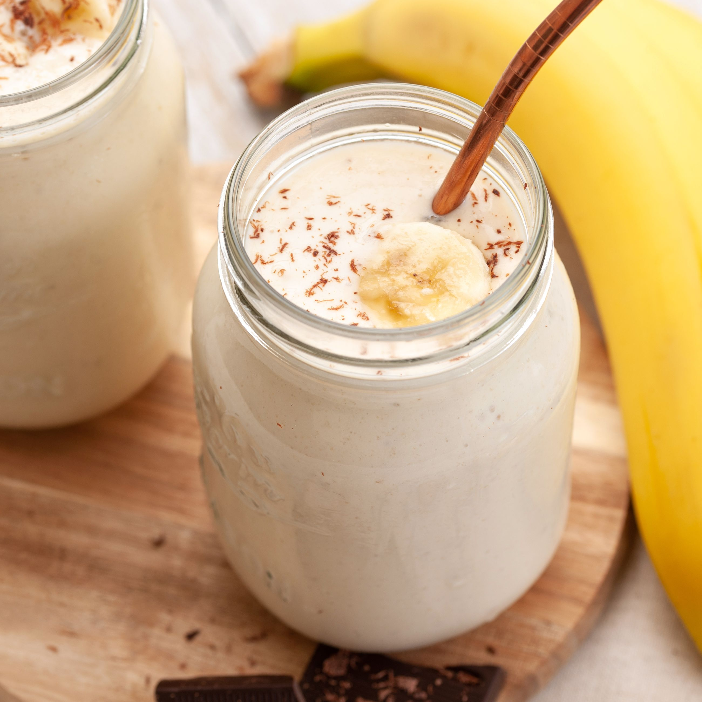

To make a banana smoothie, you will need a blender and the following ingredients: 1 banana, 1 cup of milk, 1/2 cup of yogurt, 1 teaspoon of honey, and a few ice cubes (optional). Start by peeling the banana and cutting it into small pieces. Add the banana, milk, yogurt, and honey to the blender and blend until smooth. If you like a thicker smoothie, you can add a few ice cubes and blend again. Pour the smoothie into a glass and enjoy immediately. You can also customize your smoothie by adding other fruit, such as berries or mango, or by adding a scoop of protein powder or a handful of spinach for added nutrition.
Ingredients
1 banana
1 cup of milk (cow's milk, almond milk, coconut milk, etc.)
1/2 cup of yogurt (plain, vanilla, or flavored)
1 teaspoon of honey (or other sweetener)
A few ice cubes (optional)
Steps
Gather all the necessary ingredients: 1 banana, 1 cup of milk, 1/2 cup of yogurt, 1 teaspoon of honey, and a few ice cubes (optional).
Peel the banana and cut it into small pieces.
Add the banana, milk, yogurt, and honey to a blender and blend until smooth.
If you prefer a thicker smoothie, add a few ice cubes and blend again.
Pour the smoothie into a glass and enjoy immediately.